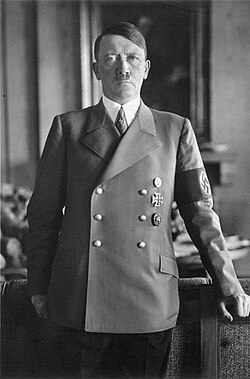

1949 годах» или «Оккупация Германии» (неофициальное название этого периода — «нулевые годы») — период существования бывшей нацистской Германии по окончании Второй мировой войны (1939—1945) в Европе, в течение которого территория Германии была оккупирована войсками СССР, Великобритании, США и Франции и находилась под управлением военных администраций этих союзных держав.
На момент подписания акта о безоговорочной военной капитуляции 8 (9) мая 1945 года в Германии практически отсутствовала гражданская экономика, была разрушена инфраструктура, не имелось собственной полноценной администрации. 6 июня 1945 года были опубликованы соглашения четырёх союзных держав о разделении территории Германии на четыре зоны оккупации и о контрольном механизме в стране, в соответствии с которыми верховную власть в Германии, в период выполнения ею основных требований безоговорочной капитуляции, должны осуществлять советский, британский, американский и французский главнокомандующие, каждый в своей зоне, согласно инструкциям соответствующих правительств[1]: восточная зона оккупации — советская (под управлением советской военной администрации); северо-западная зона оккупации — британская; юго-западная зона оккупации — американская; западная зона оккупации — французская. Это были годы не только восстановления экономики, но и переосмысления прошлого и формирования нового образа жизни.